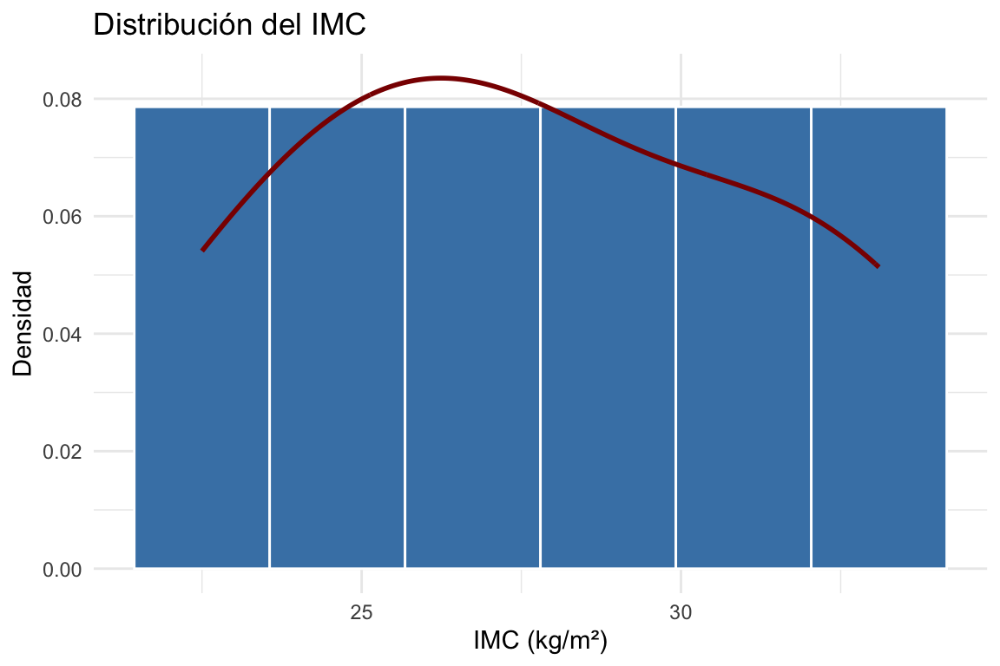
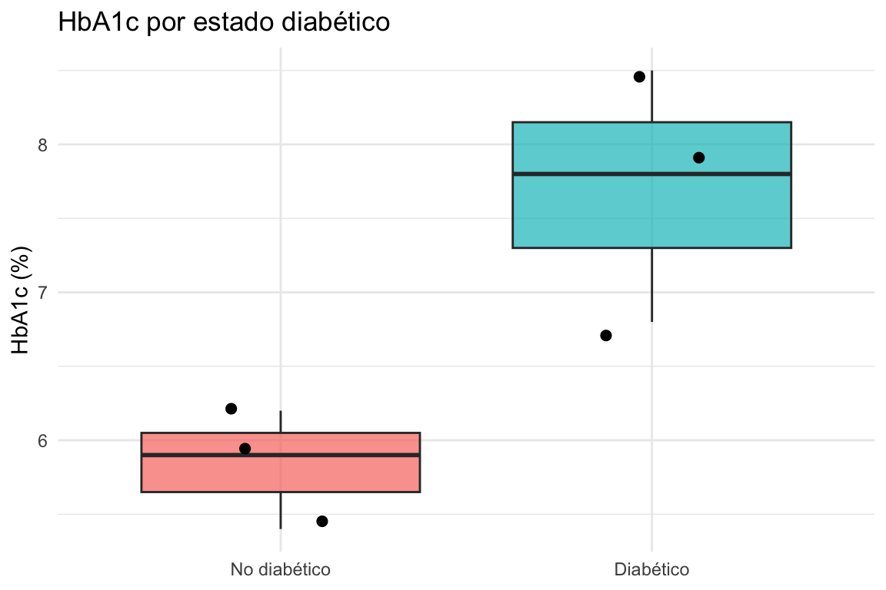
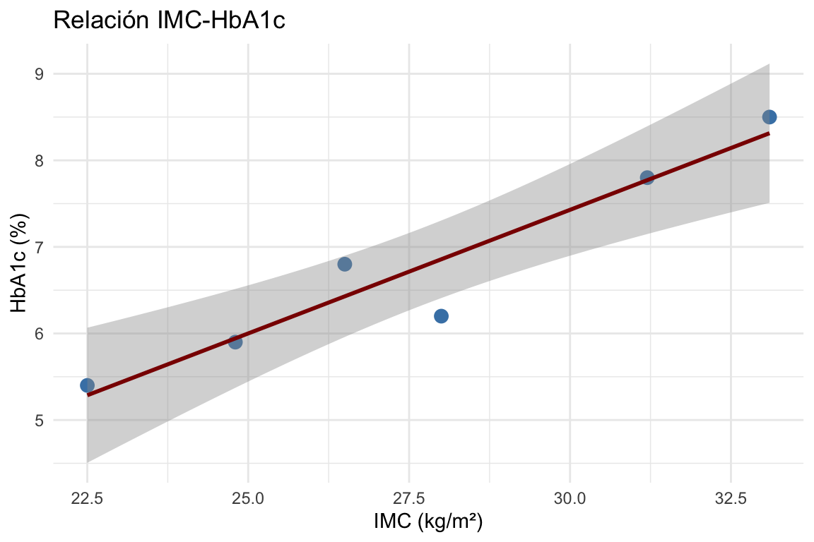

Esta guía cubre los fundamentos de R orientados a la práctica de la bioestadística y la investigación médica: importación de datos clínicos, manejo de variables categóricas (exposición, enfermedad, grupo), descripción de cohortes, contraste de hipótesis y visualización. Complementa al Apéndice B (paquete BioStatR) y al Apéndice A (repaso matemático).
TipCómo usar este apéndice
El material está organizado como referencia rápida. Cada sección incluye ejemplos ejecutables con datos clínicos simulados y, donde procede, código no ejecutable (eval: false) que muestra la sintaxis para tareas habituales en investigación médica (importar SPSS, ajustar modelos de supervivencia, etc.).
# Lógica (filtros clínicos)edades[edades >=45] # adultos mayores
[1] 45 60
Cuadro C.6: Indexación de vectores
Mostrar el código
diagnostico[hospitalizado] # diagnósticos de hospitalizados
[1] "DM2" "HTA" "DM2"
Cuadro C.7: Indexación de vectores
Mostrar el código
edades[diagnostico =="DM2"] # edad de diabéticos
[1] 30 60
C.1.3 Valores Perdidos: NA
En estudios clínicos los datos faltantes son la norma, no la excepción. R los representa con NA.
Cuadro C.8: Manejo de valores perdidos
Mostrar el código
hba1c <-c(6.2, 7.8, NA, 8.5, 6.9, NA)mean(hba1c) # NA: cualquier NA contamina el resultado
[1] NA
Cuadro C.9: Manejo de valores perdidos
Mostrar el código
mean(hba1c, na.rm =TRUE) # 7.35: ignorar NAs
[1] 7.35
Cuadro C.10: Manejo de valores perdidos
Mostrar el código
is.na(hba1c) # vector lógico
[1] FALSE FALSE TRUE FALSE FALSE TRUE
Cuadro C.11: Manejo de valores perdidos
Mostrar el código
sum(is.na(hba1c)) # 2 valores perdidos
[1] 2
Cuadro C.12: Manejo de valores perdidos
Mostrar el código
hba1c[!is.na(hba1c)] # eliminar NAs
[1] 6.2 7.8 8.5 6.9
AdvertenciaNA no es 0 ni cadena vacía
NA == NA devuelve NA, no TRUE. Usa siempre is.na(x) para comprobar valores perdidos. En análisis observacional, documenta el patrón de pérdida (¿MCAR, MAR o MNAR?) antes de elegir entre análisis de casos completos, imputación múltiple o ponderación inversa.
C.2 C.2 Estructuras de Datos
C.2.1 Data Frames y Tibbles
El data frame es la estructura central de R para datos tabulares. Un tibble (de tibble/dplyr) es un data frame con impresión más legible.
Cuadro C.13: Construcción de un data frame clínico
En investigación médica, casi toda variable de exposición o desenlace es categórica (caso/control, expuesto/no expuesto, grupo de tratamiento). R las representa con factores.
Cuadro C.19: Factores, niveles y niveles de referencia
En regresión (lineal, logística, Cox), el nivel de referencia del factor define la categoría con la que se compara cada coeficiente. Por defecto R toma el primer nivel alfabético. Para forzar uno específico (p. ej. Normopeso como referencia):
En la práctica los datos llegan en CSV, Excel, SPSS o Stata. El paquete readr y haven cubren todos los formatos habituales en investigación biomédica.
Cuadro C.22: Importación desde distintos formatos
Mostrar el código
# CSV (recomendado: readr es más rápido y robusto que read.csv)library(readr)datos <-read_csv("datos/cohorte.csv")# Excel (.xlsx)library(readxl)datos <-read_excel("datos/cohorte.xlsx", sheet ="Visita1")# SPSS (.sav) -- muy común en investigación clínicalibrary(haven)datos <-read_sav("datos/cohorte.sav")datos <-as_factor(datos) # convertir variables etiquetadas a factor# Stata (.dta)datos <-read_dta("datos/cohorte.dta")# Exportar a CSV con codificación correcta (acentos)write_csv(datos, "datos/cohorte_limpia.csv")
TipRutas robustas con here::here()
Evita rutas absolutas ("C:/Users/.../"). Usa proyectos de RStudio y here::here("datos", "cohorte.csv") para que el código funcione en cualquier máquina.
C.5 C.5 Manipulación de Datos con dplyr
Las cinco verbos esenciales de dplyr para preparar una cohorte:
Verbo
Acción
select()
elegir columnas
filter()
filtrar filas
mutate()
crear/modificar variables
summarise()
resumir (con o sin group_by())
arrange()
ordenar
Cuadro C.23: Pipeline típico de preparación de una cohorte
C.5.1 Uniones (*_join) y reestructuración (pivot_*)
Cuadro C.24: Unir tablas y pivotar a formato largo/ancho
Mostrar el código
library(dplyr); library(tidyr)# Unir cohorte con tabla de laboratorio por id de pacientecohorte_lab <- pacientes %>%left_join(laboratorio, by ="id")# Pasar de ancho (una columna por visita) a largo (una fila por visita)largo <- visitas %>%pivot_longer(cols =starts_with("pas_v"),names_to ="visita",values_to ="pas_mmHg")
C.6 C.6 Estadísticos Descriptivos
C.6.1 Variables Continuas
Cuadro C.25: Resumen univariante de variables continuas
Mostrar el código
summary(pacientes$imc) # min, Q1, med, mean, Q3, max
Min. 1st Qu. Median Mean 3rd Qu. Max.
22.50 25.23 27.25 27.68 30.40 33.10
Cuadro C.26: Resumen univariante de variables continuas
En R, for es más lento y verboso que la familia apply/map y que las funciones vectorizadas. Para un dataset clínico real (miles de filas), usa siempre dplyr::mutate() con case_when() o sapply()/purrr::map_*().
C.8 C.8 Visualización con ggplot2
ggplot2 es la herramienta estándar para visualización en publicaciones biomédicas.
Cuadro C.35: Histograma con curva de densidad
Mostrar el código
library(ggplot2)ggplot(pacientes, aes(x = imc)) +geom_histogram(aes(y =after_stat(density)),bins =6, fill ="steelblue", color ="white") +geom_density(color ="darkred", linewidth =1) +labs(x ="IMC (kg/m²)", y ="Densidad",title ="Distribución del IMC") +theme_minimal()

Cuadro C.36: Boxplot estratificado: HbA1c por estado diabético
Mostrar el código
ggplot(pacientes, aes(x = diabetes_f, y = hba1c, fill = diabetes_f)) +geom_boxplot(alpha =0.7) +geom_jitter(width =0.15, size =2) +labs(x =NULL, y ="HbA1c (%)",title ="HbA1c por estado diabético") +theme_minimal() +theme(legend.position ="none")

Cuadro C.37: Diagrama de dispersión con línea de regresión
Mostrar el código
ggplot(pacientes, aes(x = imc, y = hba1c)) +geom_point(size =3, color ="steelblue") +geom_smooth(method ="lm", se =TRUE, color ="darkred") +labs(x ="IMC (kg/m²)", y ="HbA1c (%)",title ="Relación IMC-HbA1c") +theme_minimal()

C.9 C.9 Tests Estadísticos en R Base
Tabla de referencia con los contrastes más usados en investigación médica:
# 1) Comparar HbA1c entre diabéticos y no diabéticost.test(hba1c ~ diabetes_f, data = pacientes)
Welch Two Sample t-test
data: hba1c by diabetes_f
t = -3.4207, df = 2.8523, p-value = 0.04515
alternative hypothesis: true difference in means between group No diabético and group Diabético is not equal to 0
95 percent confidence interval:
-3.65529198 -0.07804135
sample estimates:
mean in group No diabético mean in group Diabético
5.833333 7.700000
# 2) Asociación diabetes ~ obesidad (Fisher por n pequeño)fisher.test(table(pacientes$diabetes_f, pacientes$imc >=30))
Fisher's Exact Test for Count Data
data: table(pacientes$diabetes_f, pacientes$imc >= 30)
p-value = 0.4
alternative hypothesis: true odds ratio is not equal to 1
95 percent confidence interval:
0.2031288 Inf
sample estimates:
odds ratio
Inf
Selección curada de paquetes que el investigador clínico encuentra de forma recurrente. El bloque siguiente es informativo (no ejecutado).
Cuadro C.43: Paquetes recomendados según tarea
Mostrar el código
# --- Reportes clínicos y "Tabla 1" ---------------------------------------library(gtsummary) # Tablas publicables a partir de modelos / data frameslibrary(tableone) # Tabla 1 demográfica clásicatabla1 <-tbl_summary(pacientes,by = diabetes_f,missing ="no") %>%add_p() %>%add_overall()# --- Análisis epidemiológico ---------------------------------------------library(epiR) # Medidas de asociación 2x2 (RR, OR, NNT)library(epitools) # Tablas, cálculo de IC para incidencia / prevalencia# --- Supervivencia -------------------------------------------------------library(survival)library(survminer)fit_km <-survfit(Surv(tiempo, evento) ~ grupo, data = cohorte)ggsurvplot(fit_km, risk.table =TRUE, pval =TRUE)fit_cox <-coxph(Surv(tiempo, evento) ~ edad + sexo + tratamiento,data = cohorte)summary(fit_cox)# --- Inferencia causal / emparejamiento ----------------------------------library(MatchIt) # Propensity score matchinglibrary(WeightIt) # Ponderación inversa de probabilidad (IPTW)# --- Datos perdidos ------------------------------------------------------library(mice) # Imputación múltiple (FCS)library(naniar) # Visualización del patrón de missing# --- Modelos: limpieza y extracción de resultados ------------------------library(broom) # tidy(), glance(), augment() para modeloslibrary(performance) # Diagnósticos de regresión (colinealidad, supuestos)# --- Meta-análisis -------------------------------------------------------library(meta) # Meta-análisis clásico (efecto fijo / aleatorio)library(metafor) # Meta-análisis y meta-regresión flexibles
TipCitar los paquetes que usas
La revista te pedirá la versión de R y los paquetes. Usa citation("survival") y sessionInfo() en el cierre del análisis y guarda la salida.
C.11 C.11 Reproducibilidad en Investigación Médica
Un análisis médico debe poder reproducirse exactamente meses o años después (revisión por pares, auditoría, dudas del comité ético).
Cuadro C.44: Buenas prácticas de reproducibilidad
Mostrar el código
# 1) Semilla aleatoria SIEMPRE antes de cualquier simulación o aleatorizaciónset.seed(20260101)# 2) Proyecto de RStudio + rutas relativas con herelibrary(here)datos <-read_csv(here("datos", "cohorte_v3.csv"))# 3) Capturar el entorno: versión de R y paquetessessionInfo()# 4) (Opcional) renv para bloquear versiones de paquetes# install.packages("renv"); renv::init(); renv::snapshot()# 5) Análisis dentro de un documento Quarto/Rmd# -> el código y los resultados viven juntos
AdvertenciaSin semilla, sin reproducibilidad
Cualquier procedimiento estocástico (bootstrap, validación cruzada, imputación múltiple, simulación) debe ir precedido por set.seed(). Sin semilla, dos ejecuciones del mismo script darán p-valores e intervalos distintos — inaceptable en un análisis clínico.
as.numeric(x) (cuidado con factores: as.numeric(as.character(x)))
Resultados distintos en cada ejecución
Falta set.seed()
Fijar semilla antes del análisis
object '...' not found
Nombre mal escrito o variable de otro entorno
ls() para listar objetos, names(df) para variables
C.12.1 Comandos de ayuda
Cuadro C.45: Sistema de ayuda de R
Mostrar el código
?mean # ayuda de una función??"survival analysis"# búsqueda por palabra clavehelp(package ="dplyr")vignette("dplyr") # tutoriales largos del paqueteexample(lm) # ejemplos ejecutables# Diagnóstico rápido del entornogetwd(); setwd("ruta")ls(); rm(list =ls()) # listar / limpiar objetossessionInfo()
C.13 Resumen
Esta guía te ha llevado del vector más simple a un flujo completo de análisis clínico en R: importar (C.4), preparar (C.3, C.5), describir (C.6), visualizar (C.8), contrastar (C.9) y dejar todo reproducible (C.11). Para funciones de alto nivel específicas del curso (freq(), icm(), tabla2x2(), etc.) consulta el Apéndice B. Para el repaso matemático subyacente, el Apéndice A.